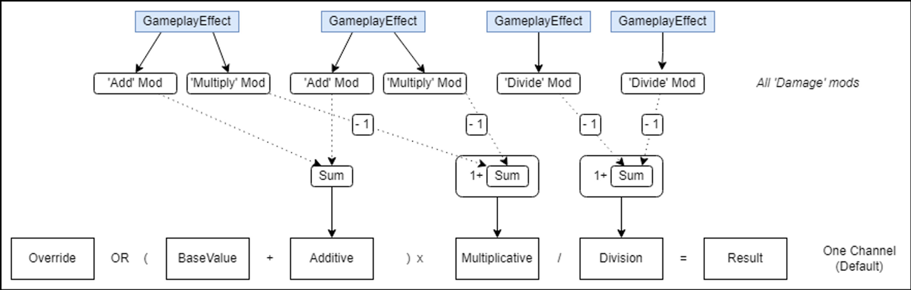
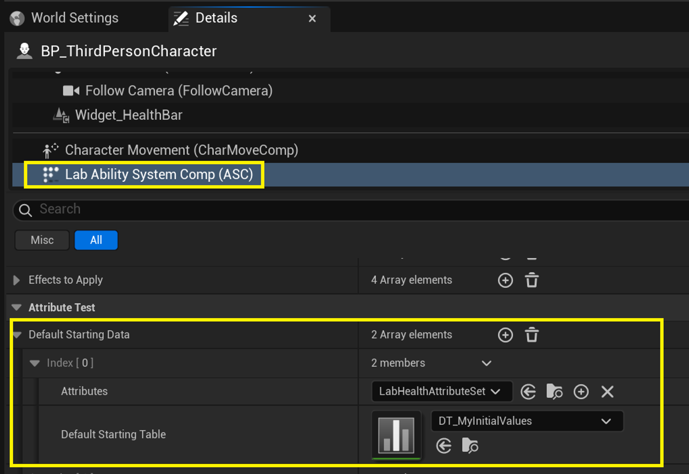
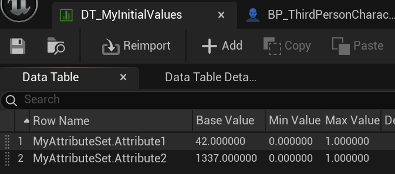

UE GAS
Gameplay Ability System (GAS) 是一个框架，用于组织与玩法相关的数值和行为。它提供了便捷的编辑方式、数据驱动的交互、状态与行为的同步，以及开箱即用的调试工具。通过启用 Gameplay Abilities 插件，即可将 GAS 添加到项目中。 GAS 可以用于实现多种功能，例如：
- damage与health系统
- 动态的武器射速和装填速度
- 修改移动相关的变量
- 启用或禁用 Pawn 的能力
- 实现 Pawn 与环境的交互 除此之外还有更多用法。Epic 自家的游戏，包括 《堡垒之夜 大逃杀》和《乐高堡垒之夜》 都在使用 GAS，因此它是一个功能丰富且经过实战检验的系统。
最佳实践往往依赖于具体项目，所以本文提供的更多是需要考虑的要点。文章中多次引用了Lyra Starter Game，因为其中展示了大量优秀实践。建议你下载 Lyra 的项目文件，这样可以随时参考代码。同时，可以阅读 Lyra 中的 Abilities 相关文档，获取更多实践思路。在使用 GAS 时，了解 UE 提供的开箱即用的 调试工具 会非常有帮助。可以查看另一篇文章 GAS Debugging Tools来快速上手。文中讨论的最佳实践同样适用于单人游戏和网络多人游戏。
1.Ability System Component
1.1 哪些 Actor 可以拥有Ability System Component？
你可以在任何需要通过可修改的属性（Attributes）和Gameplay Tags进行交互的 Actor上添加 AbilitySystemComponent（ASC）。这不仅包括角色（Character）、载具（Vehicle）等可控对象，也包括箱子（Destructible Crates）、可拾取宝箱（Lootable Chests）等被动交互对象。
1.2 一个 Actor 可以拥有多个 Ability System Component 吗？
不，我们强烈不建议这样做。因为引擎代码在多个地方默认一个 Actor 只会有一个 ASC，例如：
- ASC 类会自动检测拥有 Actor 上的 AttributeSet 子对象，并将其注册为 Gameplay Attributes 的来源。如果一个 Actor 上存在多个 ASC，它们都会尝试注册这些 AttributeSet，从而导致冲突。
- 任何 Actor 类都可以实现 AbilitySystemInterface 接口，以便 GAS 相关代码（如 AbilitySystemBlueprintLibrary）能够识别该 Actor 拥有对应的 ASC（可以是自身或其他 Actor 上的）。如果一个 Actor 拥有多个 ASC，那么该接口的预期行为将变得不确定。
1.3 IAbilitySystemInterface 的作用是什么？它是必须实现的吗？
对于包含 ASC 的 Actor 类来说，IAbilitySystemInterface 并不是必须实现的，但我们推荐使用。由于任何 Actor 都可能挂载 AbilitySystemComponent，GAS 提供的许多 Blueprint 可调用的静态函数只需要传入一个 Actor 引用即可。在内部，引擎代码会尝试从该 Actor 引用中找到 ASC。这个过程由 UAbilitySystemGlobals::GetAbilitySystemComponentFromActor() 完成，而该函数在引擎的多个地方都会被调用。
一些典型示例包括：
- ExecuteGameplayCueOnActor（来自 GameplayCueFunctionLibrary）
- GetFloatAttribute（来自 AbilitySystemBlueprintLibrary） 除了 Blueprint 可调用的函数之外，引擎代码中还有其他场景也需要在 Actor 上查找 ASC。
在 UAbilitySystemGlobals::GetAbilitySystemComponentFromActor() 内部，如果你的 Actor 类实现了 IAbilitySystemInterface，那么该函数会通过接口直接获取 ASC。如果没有实现接口，引擎则会退而求其次，调用 FindComponentByClass 在该 Actor 的所有组件中进行遍历查找 ASC。显然，让 Actor 类直接返回 ASC 引用（时间复杂度 O(1)）的方式，性能上要优于依赖遍历 n 个组件（时间复杂度 O(n)） 的查找方法。
IAbilitySystemInterface 不能在 Blueprint 中实现。这是一个有意的设计决定，目的是保持调用 C++ 接口实现时的性能，因为BlueprintNativeEvents 的调用开销比虚函数（C++ virtual function）更高。不过，即使是拥有 ASC 的 Actor Blueprint，依然可以正常GAS 蓝图函数库中的方法，因为他们使用Actor 引用作为参数输入。为了获得最佳性能，我们推荐在 C++ 类中添加 ASC，并在 C++ 中实IAbilitySystemInterface。
1.4 应该将 Ability System Component 分配给哪个与玩家相关的 Actor？
在大多数情况下，PlayerState 是最佳选择。根据你的游戏设计，PlayerController 和 Pawn 也都是可行的选项。
重生（Respawn）的持久性
ASC 应该添加到持久性的 Actor 上。如果希望属性（Attributes）、增益/减益效果（Buffs/Debuffs）以及技能冷却（Cooldowns）在玩家重生（即控制新的 Pawn）后保持不变，那么应该将 ASC 添加到不会随重生而变化的 Actor 上。此时，PlayerState 是最合适的选择。
如果希望 ASC 的状态在玩家重生时重置，那么将 ASC 添加到 Pawn 上更合理。如果你的设计中有部分技能和效果希望跨重生保持，有的则不希望保持，建议还是选择持久化的Actor（例如 PlayerState）。因为相比在ASC之间迁移状态，删除部分持续效果要简单得多。
没有 PlayerState 的情况
单人游戏：如果你的项目没有自定义 PlayerState 类。如果希望技能和效果在重生后保持，可以挂在 PlayerController 上。如果希望技能和效果在重生后重置，可以挂在 Pawn 上。PlayerController 在多人游戏中并不是有效的ASC所有者，因为它并不在所有客户端存在。
多人游戏：AI 控制的 Pawn 不一定有 PlayerState。为了简化处理，可以通过将 AIController 的 bWantsPlayerState 设置为 true，为 AI 创建 PlayerState。AIController 只存在于服务器端，因此不适合挂 ASC。PlayerState 会被复制到所有客户端，因此挂在 PlayerState 上更方便同步。如果对玩家和 AI 的 ASC 都挂在 PlayerState 上，会让设计和逻辑更易于管理。
1.5 ASC 的 OwnerActor 和 AvatarActor 是什么？
OwnerActor，指持续代表玩家、AI 或实体的 Actor。它是 ASC 的“逻辑归属”，用于标识谁拥有或控制这个能力系统。AvatarActor，指实体在世界中的物理表现。它是 ASC 的“可见化载体”，比如角色模型、Pawn 等。你的游戏代码应通过 InitAbilityActorInfo 为 ASC 提供 OwnerActor 和 AvatarActor。这可以在 ASC 生命周期内多次调用。ASC 会存储这两个 Actor，使它们在其他地方能够方便访问。
在使用能力蓝图时，实现能力行为时，获取Owner 和 Avatar。某些能力需要 Avatar，例如躲避动作会应用动量到 Avatar。另一些能力不需要 Avatar，例如从俯视视角在 RTS 游戏中放置单位。
OwnerActor 的选择，可以是 PlayerController，AIController，PlayerState，Character/Pawn 或其他类型的 Actor。在大多数非玩家场景中，ASC 所挂载的 Actor 可以直接用作 OwnerActor。例如，可拾取宝箱的 Actor 本身既是 Owner 也是 Avatar。
对玩家来说，OwnerActor 应该是该玩家关联的 Pawn、PlayerController (PC) 或 PlayerState (PS)。也可以设置其他 Actor，但前提是该 Actor 直接或间接归属于 PC、PS 或 Pawn，即递归调用 GetOwner 应该能够追溯到玩家的 PC、PS 或 Pawn。FGameplayAbilityActorInfo::InitFromActor 依赖这一点来解析并缓存玩家的 PlayerController，这是本地预测能力（Locally Predicted Ability）激活所必需的。
AvatarActor 的选择，应为 Character/Pawn 或其他在世界中有物理位置的 Actor。某些能力必须有 AvatarActor。AvatarActor 也可以为 null，例如玩家当前未控制 Pawn，但这意味着 GameplayAbility 蓝图需要考虑这种情况。
1.6 何时应为玩家调用 InitAbilityActorInfo / RefreshAbilityActorInfo？
InitAbilityActorInfo 必须在服务器端和客户端分别独立调用。无论在游戏运行期间，客户端侧的Owner 或Avatar是首次生成，还是发生了变更，都应调用 AbilitySystemComponent->InitAbilityActorInfo (OwnerActor, AvatarActor)。在客户端环境下，通过引用Owner/Avatar的OnRep函数可有效检测它们的复制时机。此外，Owner/Avatar自身的BeginPlay/PostInitializeComponents函数也可以。
在 AbilitySystemComponent（ASC）的生命周期中，可能会多次调用 InitAbilityActorInfo，例如当玩家控制不同的 Pawn 时，需要更换 AvatarActor。
PlayerController 的隐藏依赖.在多人游戏中，本地玩家的 PlayerController 必须已经完成网络复制，才能完整初始化 ASC。
InitAbilityActorInfo 内部会调用 FGameplayAbilityActorInfo::InitFromActor()，对于玩家角色，该函数会缓存其 PlayerController。在多人游戏中，这一步必须成功，才能激活本地预测（Locally Predicted）的能力。但要注意：客户端在 ASC 开始运行时，PlayerController 可能尚未完成复制，因为客户端的 Actor 生成顺序无法保证。因此，即使 OwnerActor 和 AvatarActor 之前已经传入 ASC，如果 PlayerController 后来才可用，你仍然需要再次调用 InitAbilityActorInfo 或 RefreshAbilityActorInfo。RefreshAbilityActorInfo 会尝试解析 PlayerController，同时保持当前的 Owner 和 Avatar 不变。
如何确保 PlayerController 在客户端已存在,一种可靠的方法是在 PlayerController 的 OnRep 函数（针对 OwnerActor）中调用 InitAbilityActorInfo/RefreshAbilityActorInfo。例如：如果 PlayerState 拥有 ASC，可以在 PlayerController 的 OnRep_PlayerState 中调用，因为此时可以确保 PlayerController 已存在。这一方法在 UE 5.6 的 Lyra 项目中已有应用（见最新修复）。
void ALyraPlayerController::OnRep_PlayerState()
{
Super::OnRep_PlayerState();
BroadcastOnPlayerStateChanged();
// When we're a client connected to a remote server, the player controller may replicate later than the PlayerState and AbilitySystemComponent.
if (GetWorld()->IsNetMode(NM_Client))
{
if (ALyraPlayerState* LyraPS = GetPlayerState<ALyraPlayerState>())
{
if (ULyraAbilitySystemComponent* LyraASC = LyraPS->GetLyraAbilitySystemComponent())
{
// Calls InitAbilityActorInfo
LyraASC->RefreshAbilityActorInfo();
LyraASC->TryActivateAbilitiesOnSpawn();
}
}
}
}
补充：
网络编程时，对于player，ASC挂在PlayerState上。调用InitAbilityActorInfo(OwnerActor, AvatarActor)，
- 服务器：
AMyCharacter::OnPossess时调用 - 客户端：在
AMyCharacter::OnRep_PlayerState时调用
在AI上，分两类：对于普通小怪，一般ASC挂在Pawn/Character上。对于精英和Boss，可以挂在Playerstate上, Buff复杂，需要同步数据。
1.7 应选择哪种同步模式？
ASC 提供三种同步模式：Full（完整）、Mixed（混合） 和 Minimal（最小）。这些模式决定了激活中的 Gameplay Effects 的详细信息会以何种方式同步到客户端。根据网络所有权关系，同步模式会在两种信息层级中选择其一：
1.完整信息层级：同步激活中的 Gameplay Effects 的详细信息，例如持续时间、Gameplay Tag 的数量统计。 2.最小信息层级：仅同步 Gameplay Tag 的集合（不包含数量统计）。
当 ASC 设置为 Replication Mode = Full 时，所有客户端都会收到关于激活的 Gameplay Effects 的完整详细信息。当设置为 Mixed 时，只有所属客户端（Owning Client）（即该 ASC 对应的控制者所在的客户端）会收到完整信息，而其他客户端仅收到最小信息。如果设置为 Minimal，则即使是所属客户端也只会收到最小信息。后一种选项（Minimal）在大多数项目中并不实用，因为玩家自己的客户端通常需要知晓其激活的 Gameplay Effects。因此，我们推荐使用 Full 或 Mixed 模式，这将分别导致其他客户端收到完整或最小信息。
一个很好的经验法则是使用 Mixed 同步模式，除非某些信息必须对所有客户端可见。一个典型的、需要使用 Full 同步模式的例子是：当玩家需要能够看到其他玩家和机器人的剩余 Gameplay Effect 持续时间时。即便如此，您也应该进行性能分析，并权衡同步所有激活的 Gameplay Effect 详细信息所带来的额外网络开销。
需要特别注意：无论采用哪种同步模式，属性值（Attribute Values） 只要被标记为“可同步（Replicated）”，都会通过 Attribute Set 进行同步。
补充：
| 模式 | 复制内容 |
|---|---|
| Full | 全部GE + Tag + 属性 |
| Mixed | 完整给Owner, 简化给其他人 |
| Minimal | 只复制Tag |
1.8 能否将 Gameplay Tag 的数量统计（Counts）用作游戏逻辑的计数器？
从设计初衷来看，Gameplay Tag 的数量统计仅用于内部追踪，其目的是表示有多少个来源（例如 Gameplay Abilities (GAs) 和 Gameplay Effects (GEs)）提供了该 Tag。游戏逻辑不应以有意义的方式使用这个数量值，而只应关注某个 Tag 是否存在（即是否大于零）。除非 ASC 的同步模式（Replication Mode）设置为 Full（完整），否则在模拟代理（Simulated Proxy） Actor 的 ASC 上，Tag 的数量统计将是不可用的。
2.Attributes和Attribute Sets
2.1 Base and Current value的区别是什么
Base 值：在应用任何来自激活的 Gameplay Effect 的修改器（Modifiers）之前的原始输入值。
Current 值：在对 Base 值应用所有正在生效的 Gameplay Effect 修改器之后的输出值。
属性计算公式在这里已有解释，见attribute calculation formula here。下图展示了GE修改器如何组合的过程（最终结果 Result = Current）。

2.2 我应该把所有属性定义在一个 Attribute Set 里，还是分多个 Attribute Set？
做法建议：先列出你项目中哪些 Actor 类会拥有 Ability System Component 和 Attribute Set，然后明确每个 Actor 需要哪些属性，哪些不需要。举例：很多 Actor 可能都有 Health（生命值） 和 Max Health（最大生命值），但并非所有 Actor 都会造成 Weapon Damage（武器伤害）。把不同用途的属性放到不同的 Attribute Set 是合理的做法。在 Lyra 项目中就是采用这种方式的。
2.3 ATTRIBUTE_ACCESSORS 宏的作用是什么？
在 UE 5.6 中，这个宏已经在 AttributeSet.h 中提供，名为 ATTRIBUTE_ACCESSORS_BASIC。这个宏最初是在 AttributeSet.h 的注释里提供的示例宏，后来逐渐成为常见做法：把宏复制到你自己的 Attribute Set 的头文件中使用。
#define ATTRIBUTE_ACCESSORS(ClassName, PropertyName) \
GAMEPLAYATTRIBUTE_PROPERTY_GETTER(ClassName, PropertyName) \
GAMEPLAYATTRIBUTE_VALUE_GETTER(PropertyName) \
GAMEPLAYATTRIBUTE_VALUE_SETTER(PropertyName) \
GAMEPLAYATTRIBUTE_VALUE_INITTER(PropertyName)
通过宏，简化生成 Getter / Setter / Replication 函数的代码，让你在 Attribute Set 中快速访问属性。
UCLASS()
class ABILITIESLAB_API ULabHealthAttributeSet : public UAttributeSet
{
GENERATED_BODY()
public:
// Current health
UPROPERTY(VisibleAnywhere, BlueprintReadOnly, ReplicatedUsing=OnRep_Health)
FGameplayAttributeData Health;
// Upper limit for health value
UPROPERTY(VisibleAnywhere, BlueprintReadOnly, Replicated)
FGameplayAttributeData MaxHealth;
// Current shield
UPROPERTY(VisibleAnywhere, BlueprintReadOnly, Replicated)
FGameplayAttributeData Shield;
// Upper limit for shield value
UPROPERTY(VisibleAnywhere, BlueprintReadOnly, Replicated)
FGameplayAttributeData MaxShield;
// Damage value calculated during a GE. Meta attribute.
UPROPERTY(VisibleAnywhere)
FGameplayAttributeData Damage;
ATTRIBUTE_ACCESSORS(ULabHealthAttributeSet, Health);
ATTRIBUTE_ACCESSORS(ULabHealthAttributeSet, MaxHealth);
ATTRIBUTE_ACCESSORS(ULabHealthAttributeSet, Shield);
ATTRIBUTE_ACCESSORS(ULabHealthAttributeSet, MaxShield);
ATTRIBUTE_ACCESSORS(ULabHealthAttributeSet, Damage);
}
ATTRIBUTE_ACCESSORS() 为属性 ‘Foo’ 生成的函数如下： 1.InitFoo(Value): 允许在代码中设置属性的初始值。会同时设置 Base 值 和 Current 值。假设此时没有任何 Gameplay Effect 修改器作用在属性上，因此只应在初始化阶段或游戏逻辑应用任何 GameplayEffects 之前使用。 2.SetFoo(Value): 允许修改属性的 Base 值，并根据当前所有激活的修改器重新计算 Current 值。 3.GetFoo(): 返回属性的 Current 值，即从 Base 值和modifiers计算得到的最终值，并且会缓存直到上次修改器发生变化。 4.UMyAttributeSet::GetFooAttribute(): 返回该属性的 属性定义（FProperty）。在属性事件中用于判断哪个属性受到了影响非常有用。该函数是 静态的，因此可以在任何地方获取属性定义。下面对属性值clamping的例子中，宏生成的 GetMaxHealthAttribute() 就是使用这种方式获取属性定义。
2.4 应该如何把 AttributeSet 添加到一个 Actor 上？
这里有四种方式： 1.推荐方式：在 C++ 构造函数里作为默认子对象添加（仅代码方式） 2.在 PostInitializeComponents / BeginPlay 阶段添加（仅代码方式） 3.在 运行时动态添加(仅代码方式) 4.选择ASC组件后，在蓝图中通过 DefaultStartingData 添加。
2.4.1 作为默认子对象添加 (DSO)
如果你已经知道一个 C++ Actor 类 需要哪些 Attribute Set，那么最好的做法是在 Actor 的构造函数中通过 CreateDefaultSubobject() 来创建它们，并保存一个引用。默认子对象（DSO）Attribute Set 相比其他方法更推荐使用，因为它们不需要像运行时创建的 UObject 那样进行网络复制（replication）。客户端可以直接访问这些 DSO Attribute Set，例如用于绑定委托（delegates），而不必等待它们被复制到客户端。
AAbilitiesLabCharacter::AAbilitiesLabCharacter()
{
LabAbilitySystemComp = CreateDefaultSubobject<ULabAbilitySystemComponent>(TEXT("AbilitySystemComponent"));
HealthSet = CreateDefaultSubobject<ULabHealthAttributeSet>(TEXT("HealthSet"));
CombatSet = CreateDefaultSubobject<ULabCombatAttributeSet>(TEXT("CombatSet"));
}
优势：客户端可以立即访问DSO的Attribute Set，无需等待服务器复制对象完成。这对于绑定委托（delegates）非常有用。
建议：
-
你必须用 UPROPERTY()宏，修饰AttributeSet 的引用，否则它可能会在被找到之前就被 GC（垃圾回收） 清理掉。在PIE（Play In Editor）运行时，会复制一份持久关卡，会触发一次GC，如果Map中的Actor动态创建的对象没有使用UPROPERTY()保存引用，就会在这次GC被清理掉。
-
在 Actor构造函数中运行时，蓝图默认值和实例值还没有加载，所以不能依赖这些值去有条件地添加 AttributeSet。
-
在构造函数里创建的子对象AttributeSet实际上是一个原型对象（Archetype Object），它并不是游戏运行中真正会被使用的那个实例。如果你需要 绑定 Delegate，应该在 PostInitializeComponents() 或 BeginPlay() 中进行，这样才能确保绑定的是实例对象而不是原型。
另外，默认子对象（Default Subobject）的 AttributeSet 会在AbilitySystemComponent::InitializeComponent() 中被自动检测到。
2.4.2 在 PostInitializeComponents / BeginPlay中添加
你可以在 拥有该 Actor 的游戏开始时 添加 AttributeSet。PostInitializeComponents() 和 BeginPlay() 是比较合适的添加位置。相比使用 DSO（Default SubObject） 的方式，这么做有一个好处：到这个阶段，蓝图默认值已经加载完成，所以你可以根据蓝图里设置的数值来有条件地添加 AttributeSet。
void AAbilitiesLabCharacter::PostInitializeComponents()
{
Super::PostInitializeComponents();
LabAbilitySystemComp->AddSet<ULabHealthAttributeSet>();
LabAbilitySystemComp->AddSet<ULabCombatAttributeSet>();
}
优点：你可以根据“蓝图默认值”或 放在地图里的“Actor实例值”来决定要添加哪些 AttributeSet。
建议：多人游戏场景下，虽然你可以在客户端生成AttributeSet，但最终起作用的是服务器生成的AttributeSet，它会被复制到客户端，存放在AbilitySystemComponent->SpawnedAttributes里。任何客户端自己生成的AttributeSet都只是临时存在。如果你需要绑定 AttributeSet 的 Delegate，那么还应该重写OnRep_SpawnedAttributes()：先从客户端临时创建的 AttributeSet 上取消订阅（unsubscribe），再在服务器复制下来的 AttributeSet 上重新订阅（subscribe）。不过，客户端临时生成 AttributeSet 依然是有用的，它可以在服务器正式复制下来的 AttributeSet 还没到之前，先管理由服务器施加的 GameplayEffect 的属性变化。
2.4.3 在 运行时动态添加
你可以在任何时刻调用 AddSet
客户端收到 Active GameplayEffect 和 AttributeSet 的 复制顺序可能会乱序，所以建议在服务器端，提前很久添加所需的 AttributeSet，而不要在同一帧直接应用依赖它的 GameplayEffect（GE）。同理，在服务器端删除AttributeSet 时，也建议提前很久先移除依赖它的 GameplayEffect，以避免逻辑错误。通常情况下，并不需要主动移除 AttributeSet。
2.4.4 通过 DefaultStartingData 添加
在 Ability System Component的Details 面板 中，设计师可以配置 AttributeSet 类 以及它们的 初始属性值。在 ASC 的 DefaultStartingData 属性里，你可以提供 一组（AttributeSet 类 + DataTable） 的配对，用来给每个 AttributeSet 设置初始值。必须提供 DataTable，否则这个 AttributeSet 不会被创建。

该 DataTable 应该使用 AttributeMetaData 作为行结构（Row Struct）。对于 AttributeSet 中每个你想要赋值的属性：添加一行，行名格式为 MyAttributeSet.AttributeName，并填写 BaseValue。例如，对于一个 AttributeSet 类 MyAttributeSet，它有两个属性，你应该像下图那样配置 DataTable（每个属性一行）。

优点： 1.设计师可以在 Actor 蓝图 中，或者在关卡里 Actor 实例 上，指定它拥有的 AttributeSet。 2.每个 AttributeSet 中的每个属性，设计师都必须提供 初始值 DataTable。
建议： 1.与之前的方式类似：客户端接收到服务器创建的 AttributeSet 会有延迟。这点在访问 AttributeSet 时很重要。客户端在服务器的 AttributeSet 到来之前，会有一个临时本地 AttributeSet。一旦服务器的 AttributeSet 被复制过来，本地临时对象会被替换（stomped）。当绑定 AttributeSet 的 Delegate 时，要注意：通过 OnRep_SpawnedAttributes 函数，检查服务器复制过来的 AttributeSet，并绑定到它的 Delegate。 2.必须选择有效的 DataTable，否则 AttributeSet 根本不会被创建。
原文： https://dev.epicgames.com/community/learning/tutorials/DPpd/unreal-engine-gameplay-ability-system-best-practices-for-setup